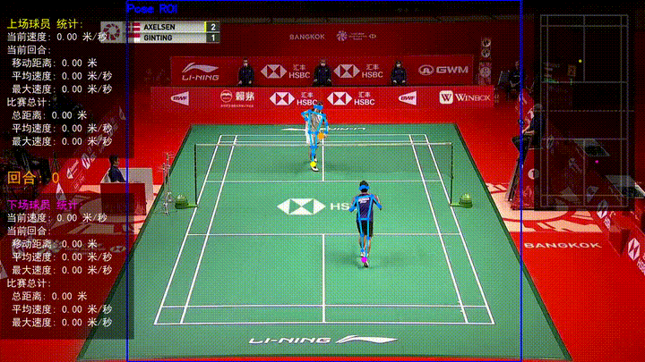
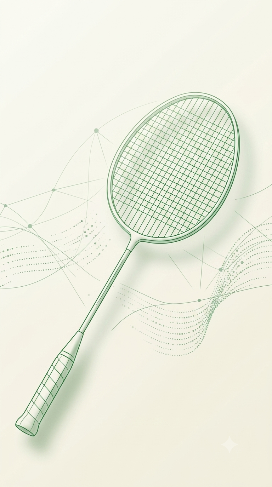
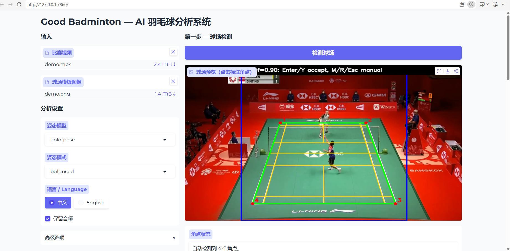
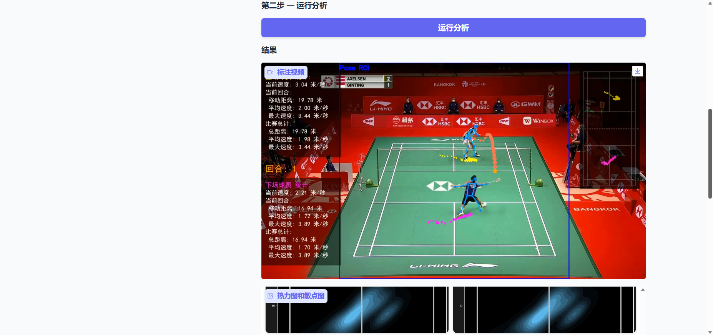
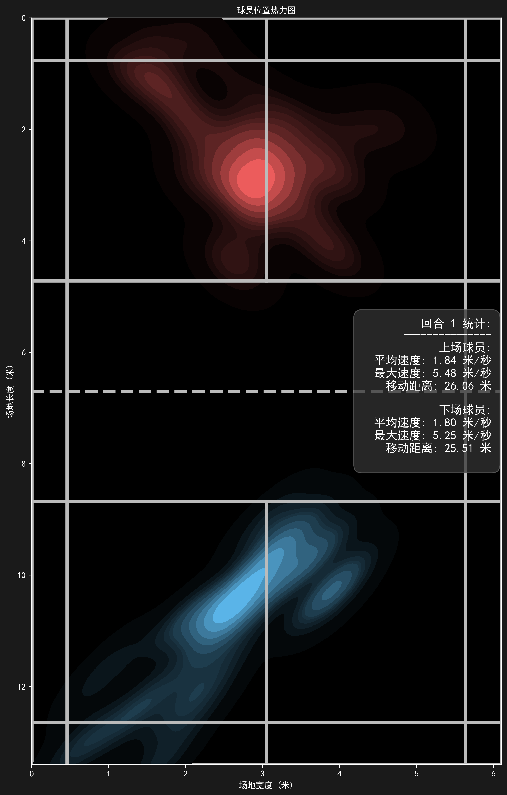
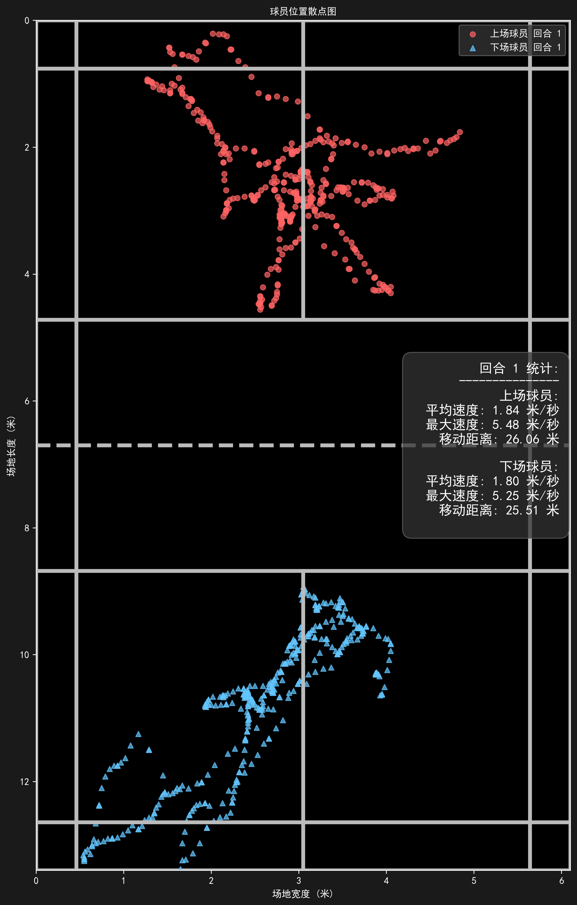

选择视频
支持 MP4、MOV、M4V，适合 30 秒到 3 分钟的固定机位训练片段。

Pipeline
支持 MP4、MOV、M4V，适合 30 秒到 3 分钟的固定机位训练片段。
自动识别球场角点；必要时可以手动点选四个外侧角点。
后端追踪球员、羽毛球轨迹和移动强度，并生成可视化结果。
在 App 里查看报告、播放视频、下载精彩集锦到系统相册。
Mobile First
当前 App 使用 Cloudflare Tunnel 连接 Ubuntu 后端。手机不需要在同一个局域网，也不需要知道服务器公网 IP。

Report




Server
公网 HTTPS 入口转发到本机 FastAPI 后端。
任务信息、用户身份和历史记录落本地数据库。
诊断接口可检查模型文件、磁盘空间、CUDA 和 NVIDIA 显卡。